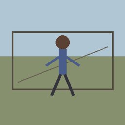
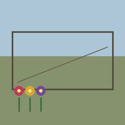
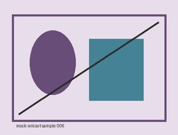
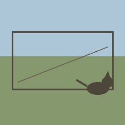
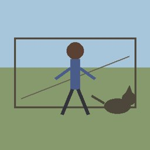

Model: nvidia/nemotron-3-nano-omni-30b-a3b-reasoning:free
| # | Image | Metadata | Human | Animal | Flower | Evidence |
|---|---|---|---|---|---|---|
| 0 |  |
Artist: 22 Genre: 4 Style: 21 |
no | yes | no | A bird is visible in the sky near the top-left, confirming the presence of an animal, while no humans or flowers are apparent in the landscape. |
| 2 |  |
Artist: 16 Genre: 6 Style: 20 |
yes | no | no | A human person is visible in the center of the painting, while no animals or flowers are present. |
| 6 |  |
Artist: 22 Genre: 10 Style: 21 |
no | no | yes | The painting shows a vase with flowers in the center, but no humans or animals are visible. |
| 9 |  |
Artist: 11 Genre: 6 Style: 21 |
yes | no | no | The person is visible in the image, so it contains a human. |
| 10 | Artist: 9 Genre: 4 Style: 23 |
yes | no | no | The image shows a sailboat with a person visible on the boat in the foreground. | |
| 11 |  |
Artist: 14 Genre: 2 Style: 24 |
yes | no | no | Humans are visible as soldiers in the foreground near the castle walls, but no animals or flowers are present in the scene. |
| 13 | Artist: 1 Genre: 6 Style: 21 |
yes | no | yes | A human person is seated in the center of the image, a red flower is pinned to their lapel, and no animals are visible. | |
| 17 | Artist: 7 Genre: 3 Style: 23 |
yes | no | no | The image contains multiple human figures, including two people in the foreground and a group in the background, but no animals or flowers are visible. | |
| 18 | Artist: 9 Genre: 4 Style: 23 |
yes | yes | no | A person on a donkey is in the center, and a group of people are in the foreground, but no flowers are visible. | |
| 19 | Artist: 7 Genre: 3 Style: 23 |
yes | no | no | Two human figures are visible in the foreground and background, but no animals or flowers are present in the image. |